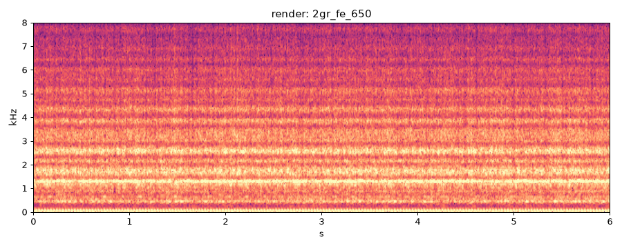
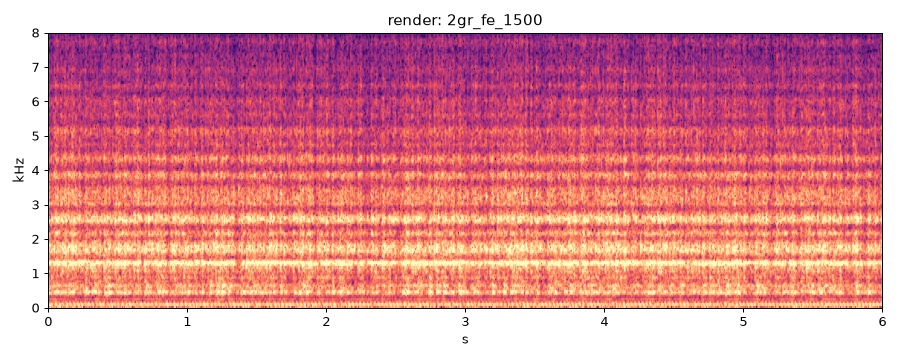
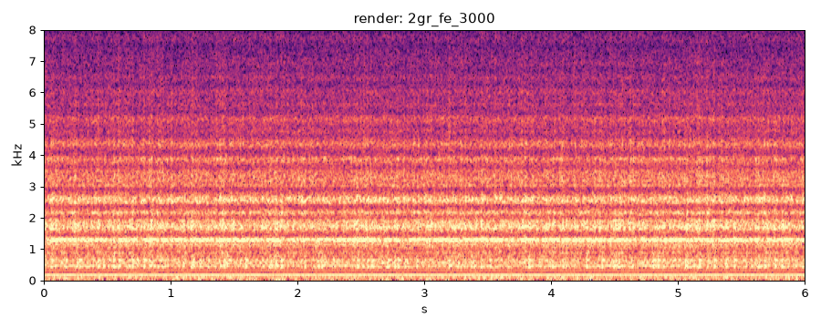
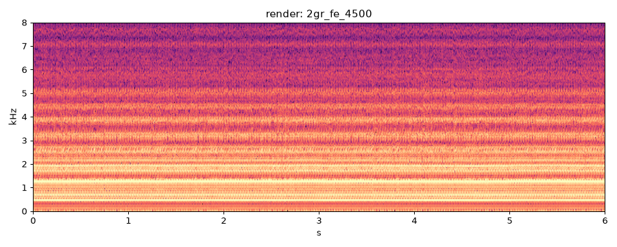
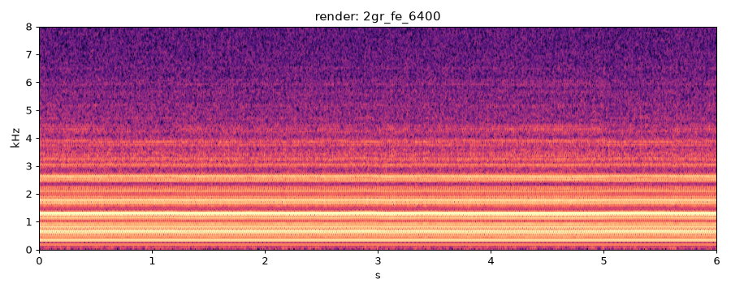

| check | value |
|---|---|
| deterministic | PASS |
| nan_free | PASS |
| below_full_scale | FAIL |
| firing_freq_ok | PASS |
current best
previous best
| metric | value | vs prev |
|---|---|---|
| firing freq error % | 0.018 | -0.001 |
| half-order level dB | -6.2 | |
| HNR dB | 12.8 | |
| crest dB | 14.5 | |
| centroid Hz | 2401 | |
| flatness | 0.0004 | |
| max_abs | 0.319 | |
| rtf | 8.200 | |
| peak_cyl_pressure_bar | 16.730 |

current best
previous best
| metric | value | vs prev |
|---|---|---|
| firing freq error % | 0.043 | +0.005 |
| half-order level dB | -2.8 | |
| HNR dB | 10.6 | |
| crest dB | 16.4 | |
| centroid Hz | 2522 | |
| flatness | 0.0011 | |
| max_abs | 0.284 | |
| rtf | 7.710 | |
| peak_cyl_pressure_bar | 37.330 |

current best
previous best
| metric | value | vs prev |
|---|---|---|
| firing freq error % | 0.038 | +0.002 |
| half-order level dB | -1.3 | |
| HNR dB | 9.5 | |
| crest dB | 15.0 | |
| centroid Hz | 2574 | |
| flatness | 0.0024 | |
| max_abs | 0.238 | |
| rtf | 7.930 | |
| peak_cyl_pressure_bar | 57.650 |

current best
previous best
| metric | value | vs prev |
|---|---|---|
| firing freq error % | 0.034 | +0.001 |
| half-order level dB | 2.1 | |
| HNR dB | 12.9 | |
| crest dB | 9.5 | |
| centroid Hz | 2695 | |
| flatness | 0.0019 | |
| max_abs | 0.999 | |
| rtf | 7.580 | |
| peak_cyl_pressure_bar | 79.760 |

current best
previous best
| metric | value | vs prev |
|---|---|---|
| firing freq error % | 0.034 | +0.000 |
| half-order level dB | 1.1 | |
| HNR dB | 15.0 | |
| crest dB | 12.3 | |
| centroid Hz | 2297 | |
| flatness | 0.0012 | |
| max_abs | 0.517 | |
| rtf | 8.100 | |
| peak_cyl_pressure_bar | 94.520 |
